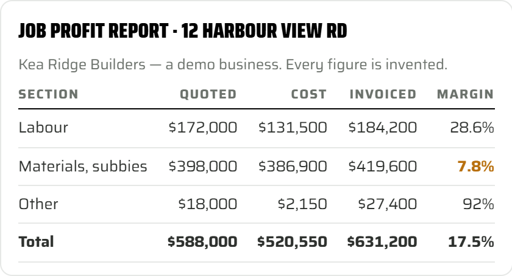

Most tradies know their turnover. Very few know what the last job actually made. Back-costing is how you find out — and it takes one job and an afternoon, not a new system.
A builder I work with finished a big residential job this year. Good client, paid on time, everyone happy. I asked him what it made. He said "somewhere under twenty percent, I think." He was right, as it turned out — but he could not have told you which part of the build made it, or which part gave some of it back. That is the gap back-costing closes.
Reading a finished job backwards. What did you quote, what did it cost, what did you invoice, and where did the margin come from — by section, not as one number. Labour, materials and subbies, and everything else, each on its own line.
It is not a report you run every week. It is a habit: one job, once a month, read properly, and the lesson goes into the next quote.
This is a demo builder — Kea Ridge Builders, owner on the tools, an apprentice and a contractor — and every figure is invented. The shape is real.

Materials carry the risk and return the least, at a flat markup — and they came in under the quote, so the quote was fine and the markup is the issue. And the labour markup was not consistent across the phases of the job: foundations and framing priced at one rate, fit-out at another, so the margin depended on which phase ran long. Two things. The next quote changed.
The first time you back-cost, the quote was probably one figure per section and the job in your software was not set up to match it, so costs landed wherever they landed. You can see over and under by section, but not by stage — you cannot tell which part of the build ran hot.
That is normal, and it is still worth doing. The first back-cost shows you the shape. The second one, on a job you set up to match its quote before it started, shows you the truth. Quote sections become the job's cost sections, same names, same order, and back-costing becomes a report instead of a project.
I have put the four steps, the demo table and the AI prompt on one page. Print it, or open it on your phone on site.
The four steps, the demo job profit table, what to read from it, and a prompt to take to your own AI. Free.
Open the sheet DownloadIf you want the whole four-step roadmap — the eight wastes, 5S for your job software, back-costing, and making it a habit — that is the Efficient Tradie handout, also free, on the Exploring Tradie page.
Bring one finished job to a two-hour Exploring Tradie session and we will back-cost it together. Christchurch, Canterbury, or anywhere in NZ on a screen.
Book a session